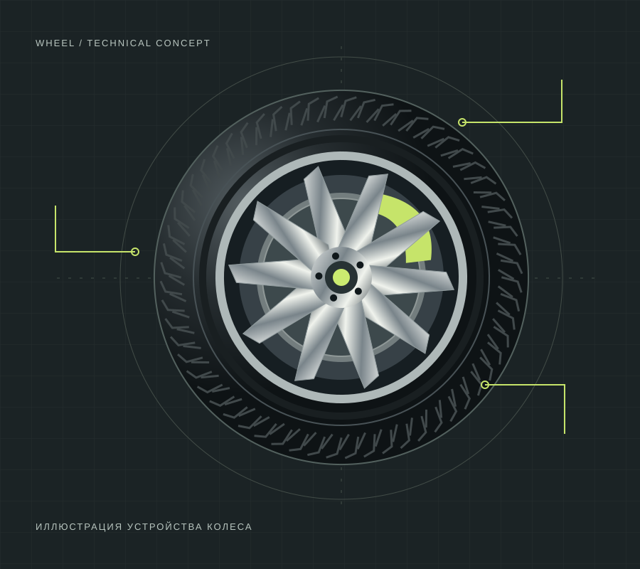

Сезонная замена колёс
Смена комплектов колёс в сборе. Удобный отдельный пункт в структуре записи.
Демонстрационный проект. Не является сайтом действующей компании
Колёса. Сезон. Движение.
Шиномонтаж и понятный подход к обслуживанию автомобиля. Концепция сервиса, где каждый этап на своём месте.

01 / Подобрать услугу
Выберите категорию. Это демонстрация каталога; цены и настоящая запись отсутствуют.
Показано услуг: 6. Категория: Все услуги.
Смена комплектов колёс в сборе. Удобный отдельный пункт в структуре записи.
Демонстрационное описание снятия и установки шины на диск.
Пример услуги по проверке и корректировке баланса колеса.
Сценарий первичной оценки повреждения. Возможность ремонта требует осмотра.
Визуальный осмотр шин и дисков перед дальнейшим обслуживанием.
Пример категории: замена масла и фильтров по согласованному регламенту.
02 / Порядок обслуживания
Выбираете направление и обсуждаете, что нужно автомобилю.
Уточняется состояние колёс и подходящий состав работ.
До начала обслуживания фиксируются объём и условия.
Завершает сценарий контроль результата и пояснение выполненных действий.
03 / Демонстрационный процесс
В примере отмечаются состояние шины и видимые особенности диска.
Каталог помогает обсудить необходимую услугу без навязывания лишнего.
Сценарий заканчивается проверкой и объяснением результата, а не выдуманным отзывом.
04 / Полезно перед визитом
Никак: реальной записи здесь нет. Кнопка открывает окно с предупреждением и не отправляет данные.
Для реального визита заранее уточняют, нужны ли шины отдельно или комплект колёс в сборе, и сообщают об известных повреждениях. Это пример справочного контента.
Условия зависят от погоды, типа шин и требований эксплуатации. Этот демонстрационный сайт не устанавливает дату и не заменяет рекомендации производителя.
Нет. Возможность ремонта зависит от характера и расположения повреждения. В реальном сервисе решение принимают после осмотра.
На странице показана структура каталога без реальных цен. Коммерческих предложений и гарантий в демо нет.
05 / Демонстрационная запись
Здесь начинается пример сценария записи. Адреса, телефоны и реальные свободные часы не указаны: компания вымышлена.